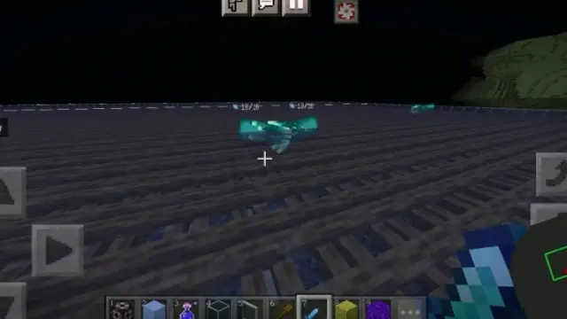
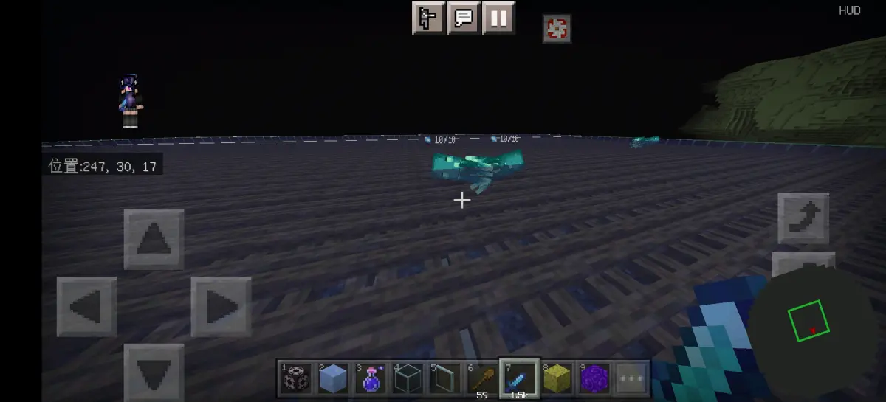
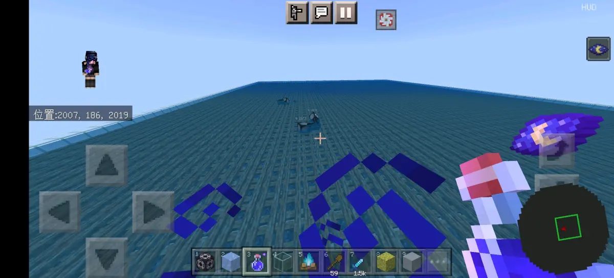
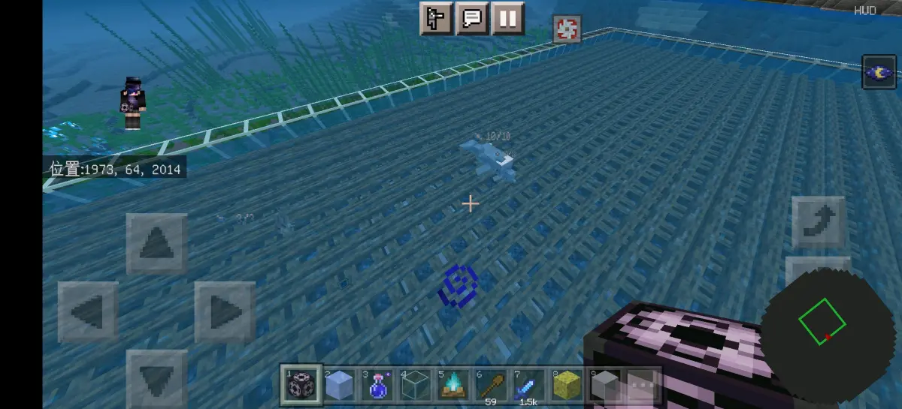
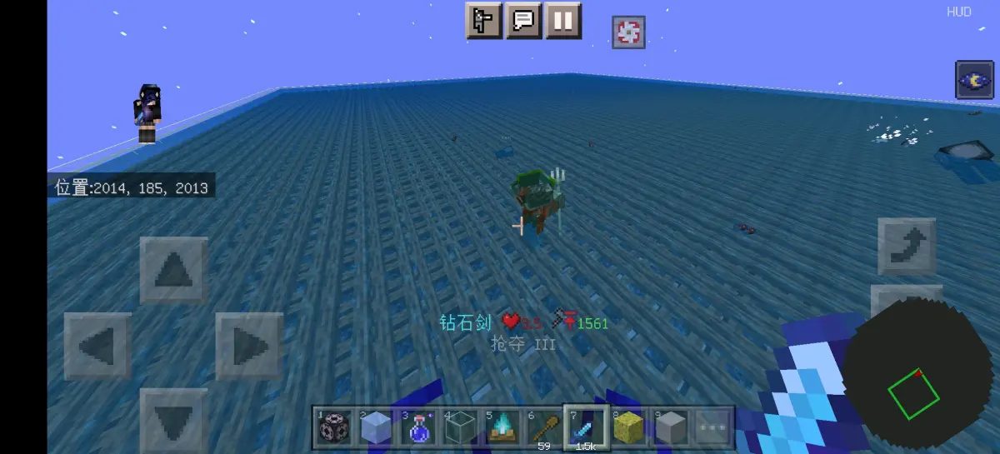
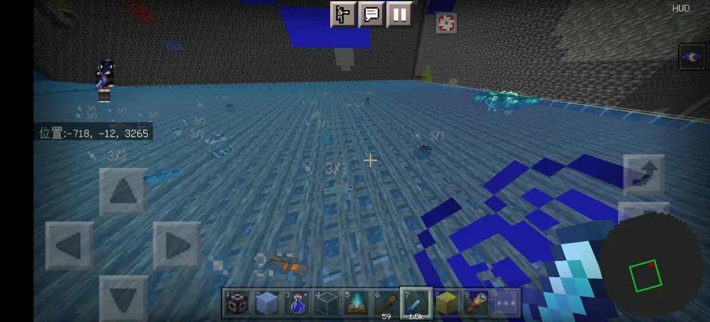
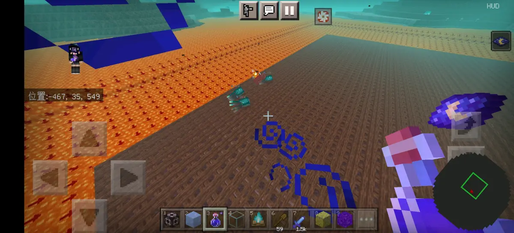
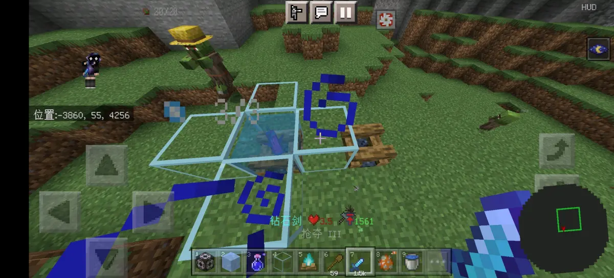

众所周知，基岩版的篝火原本是一个完全不阻碍生成方块外加真空气类方块的挤压性质方块，但是在1.17的哪个版本当中进行了修改，当时，更新日志是这样描述的，就是修复了动物会生成在篝火上的问题，然后从此这个篝火就被一刀砍的半废了，因为从此之后，篝火的性质就变成了一个部分不阻碍生成方块外加伪空气类方块的挤压性质方块，因此，很多之前的设计也不能用了，而且最新版还要把燃烧给砍了，真就是直接废了
看过我们之前守卫者生成机制专栏的，应该都知道，篝火对于守卫者来说仍然是一个完全不阻碍生成方块【MCBE 守卫者生成的空间检测机制-哔哩哔哩】 https://b23.tv/3h55lZB
但是我们今天在测试发光鱿鱼农场的時候，突发奇想，想测试一下篝火，结果就出现了这样的情况

没错，篝火对于发光鱿鱼来说居然也是完全不阻碍生成方块，然后这个时候我们就大概猜到了一点，那就是篝火肯定还对于一些别的生物仍然来说是完全不阻碍生成方块，所以我们先去群里问了一下曲奇，不过他也没有过多的测试，得到的新的结果就是增加了一个流浪商人，于是我们打算自己再去测试一下
我们主世界测试了，露天动物，洞穴动物，普通怪物，女巫小屋，掠夺者哨塔，海底神殿，史莱姆区块，溺尸，露天鱼类，鱿鱼，海豚，发光鱿鱼，洞穴鱼类，蝾螈，流浪者，基本上大部分都测试了，铁傀儡应该想来是不行，至于劫掠的话，倒是没有去测试，流浪商人实在难等就算了，听曲奇说可以，就当他可以吧，问题不大
然后结果的话，我们把可以生成的给放出来图片




最终得到的结果就是，在主世界当中，除了蝾螈之外，其他的所有水生生物都是可以生成在篝火当中的，就包括鱿鱼发光，鱿鱼，以及洞穴和露天生成的所有鱼，外加守卫者，以及曲奇测试的流浪商人
之后我们也把地狱和末地的自然生成与结构生成给测试了一下，不过，火云邪神不好测试，因为篝火不可能含岩浆，所以就没有测了，除此之外的都测试了，不过能刷的还是只有这个

所以基本上到这里就可以得出结论了，篝火在1.17被修改了性质之后，除了流浪商人（劫掠和铁傀儡及猫没测试），之外的所有非水生生物，外加一个蝾螈，他们的判定都改过来了，也就是把篝火视为部分不阻碍生成方块，但是除了蝾螈之外的水生生物都没有改过来，依然是把它当做完全不阻碍生成方块来判定，不过他的真空气类方块性质是完全消失了，不管哪一种，都是把它当做伪空气类方块来判定，问题不大

总结，篝火的真空气类方块性质完全改为伪空气类方块性质，但是完全不阻碍方块性质对于除了蝾螈之外的其他水生生物以及流浪商人仍然有效，挤压类方块性质不变，那就这样，水个专栏，到此结束，问题不大
测试使用版本：正式版1.19.51
鸣谢：@Cookie_531